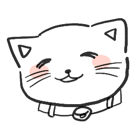

대학/대학원
생활
현재
전종미
부산외국어대학교 일본어융합학부 교수
D69I / 051-509-5749 / jmjeon@bufs.ac.kr
부산대학교 인문대학 한문학과 학사
부산대학교 대학원 일어일문학과 일본어학전공 석사
일본 나고야대학교 대학원 국제언어문화연구과 일본언어문화전공 석사
일본 나고야대학교 대학원 국제언어문화연구과 일본언어문화전공 박사
인터뷰어
박웅비
이경연

장소윤
최부권